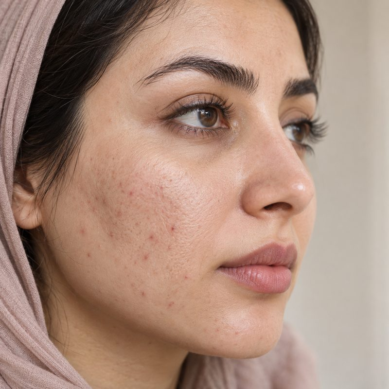
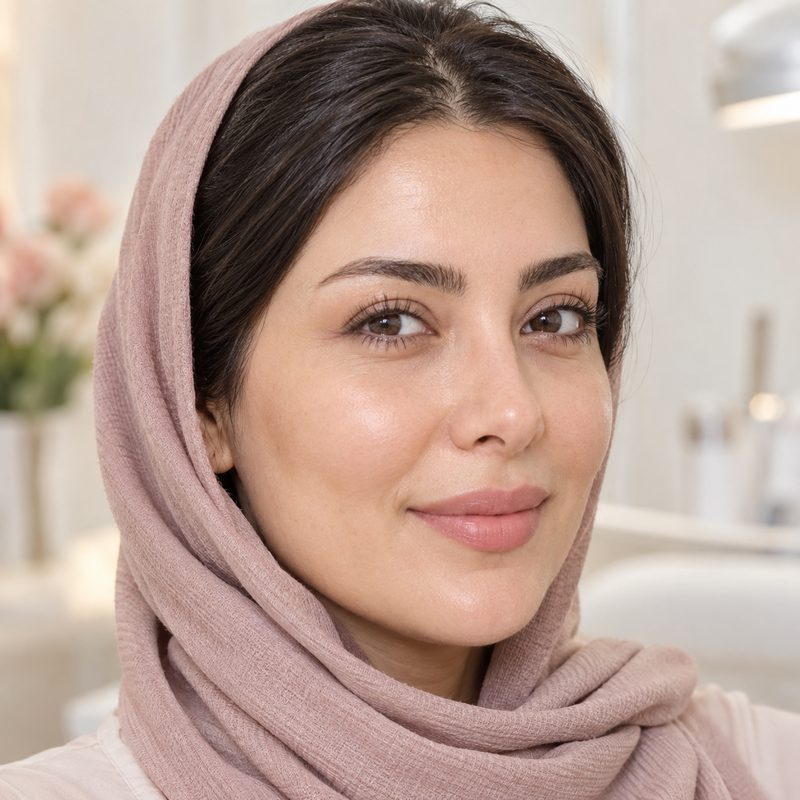

بوتاکس با کاهش موقت انقباض عضلات صورت، خطوط اخم، پیشانی و اطراف چشم را کمرنگ میکند. نتیجهی درست، چهرهای آرام و طبیعی است — نه بیحالت.
بررسی آناتومی چهره، سابقه پزشکی و انتظارات شما توسط پزشک.
پاکسازی ناحیه، علامتگذاری نقاط تزریق و استفاده از کرم بیحسی.
تزریق با سرسوزن ظریف در نقاط مشخصشده؛ حدود ۱۵ تا ۲۰ دقیقه.
دریافت دستورالعمل مراقبتی و ویزیت کنترل پس از ۱۴ روز.
با استفاده از سرسوزنهای بسیار ظریف و کرم بیحسی موضعی، احساس درد در حد یک نیشگون خفیف است. کل فرایند حدود ۱۵ تا ۲۰ دقیقه طول میکشد.
ماندگاری به نوع خدمت، متابولیسم بدن و سبک زندگی بستگی دارد. بوتاکس معمولاً ۴ تا ۶ ماه و ژلهای هیالورونیک اسید ۹ تا ۱۸ ماه ماندگاری دارند.
لیزر برای اغلب تیپهای پوستی قابل انجام است، اما تعیین نوع دستگاه و تنظیمات آن بر عهده پزشک است و در جلسه مشاوره مشخص میشود.
نمونههای قبل و بعد این خدمت را ببینید

